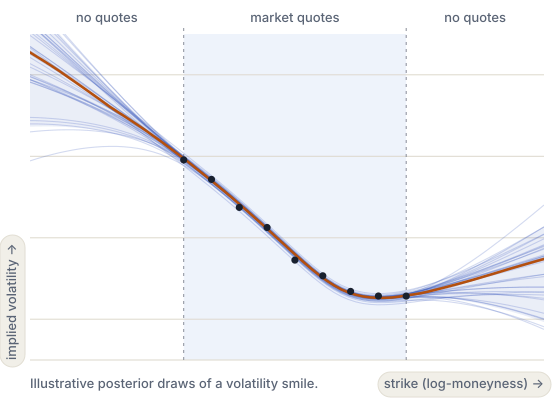
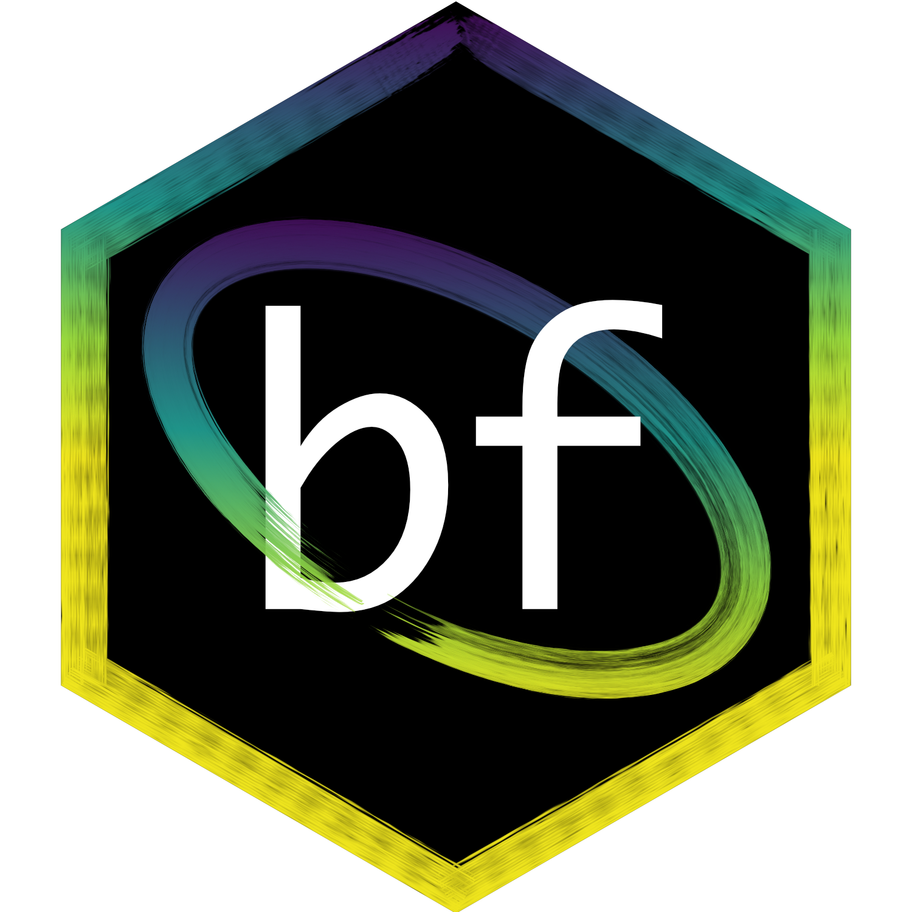

Francesco Muia
PyMC Labs
AI and Bayesian data science consultant; PhD in Theoretical Physics and Executive MBA. Extensive research and industry experience in computational finance.
ICAIF '26 Tutorial
This tutorial introduces amortized Bayesian inference for volatility models using BayesFlow. We will train neural networks to rapidly calibrate volatility models to financial data.
The examples will demonstrate the fundamental principles of amortized Bayesian workflows using popular volatility models, such as Heston and rough Bergomi.


Use BayesFlow to train a neural posterior estimator on simulated data and apply it to new observations.PyMC Labs
AI and Bayesian data science consultant; PhD in Theoretical Physics and Executive MBA. Extensive research and industry experience in computational finance.
Brown University
Postdoctoral Fellow; PhD in Computational Cognitive Science and MPhil in Statistics. Extensive experience in hedge funds, open source probabilistic modeling, and SBI.
Rensselaer Polytechnic Institute
Assistant Professor and lead developer of BayesFlow. PhD in Statistical Modeling. AI researcher and Bayesian statistician with extensive experience in teaching, workshops, and consulting.
Rensselaer Polytechnic Institute
Postdoctoral Scholar in Statistical Modeling and core BayesFlow developer. Specializes in computational modeling, simulation-based inference, and digital twins across different disciplines.
Saturday 14 November, 11:00–13:00 CET.
| Time | Session | Presenters | Materials |
|---|---|---|---|
| 11:00-11:15 | Introduction: Bayes for volatility models | Francesco Muia | TBD |
| 11:15-11:30 | Amortized Bayesian inference | Alexander Fengler | TBD |
| 11:30-11:40 | Neural network architectures | Stefan T. Radev | TBD |
| 11:40-12:00 | Worked BayesFlow example: the Heston model | Stefan T. Radev | Notebook |
| 12:00-12:30 | Rough Bergomi model and application | Francesco Muia Alexander Fengler |
Notebook |
| 12:30-13:00 | Advanced Topics and Open Question | Stefan T. Radev Jerry M. Huang |
To be added |
Session notebooks are linked in the program.
Application notebooks in marimo. A laptop CPU is enough.
The tutorial repository, with the simulators, the trained networks and setup instructions.
The open-source Python library for amortized Bayesian inference that we use throughout.
Bring a laptop and install the tutorial environment before the session. Pixi installs Python 3.12, BayesFlow 2.1, marimo and their dependencies. A CPU is enough to work through the saved examples.
The supplied macOS environment is for Apple Silicon (M1 or later). Intel Macs are not covered by the lockfile.
curl -fsSL https://pixi.sh/install.sh | shClose and reopen your terminal, then check that pixi --version works.
sbi4finance-main.
cd ~/Downloads/sbi4finance-main/tutorial
pixi install --locked -e default
pixi run --locked -e default test
pixi run --locked -e default slot1If you extracted the ZIP elsewhere, change the first line to the path of its tutorial folder.
Use a 64-bit Intel or AMD Linux system. ARM Linux is not included in the supplied lockfile.
curl -fsSL https://pixi.sh/install.sh | shClose and reopen your terminal, then check that pixi --version works.
sbi4finance-main.
cd ~/Downloads/sbi4finance-main/tutorial
pixi install --locked -e default
pixi run --locked -e default test
pixi run --locked -e default slot1If you extracted the ZIP elsewhere, change the first line to the path of its tutorial folder.
The lockfile includes 64-bit Windows, but this tutorial has not yet been runtime-tested on Windows.
powershell -ExecutionPolicy Bypass -c "irm -useb https://pixi.sh/install.ps1 | iex"Close and reopen your terminal, then check that pixi --version works.
sbi4finance-main.
cd "$env:USERPROFILE\Downloads\sbi4finance-main\tutorial"
pixi install --locked -e default
pixi run --locked -e default test
pixi run --locked -e default slot1If you extracted the ZIP elsewhere, change the first line to the path of its tutorial folder.
The marimo editor opens in your browser. Stop it with Ctrl + C before opening another notebook. Replace slot1 with slot2, slot3, heston-options or rough-options for the other sessions.
Already have the repository? Run the installation commands from its tutorial folder. See the tutorial setup guide and Pixi installation instructions for more detail.